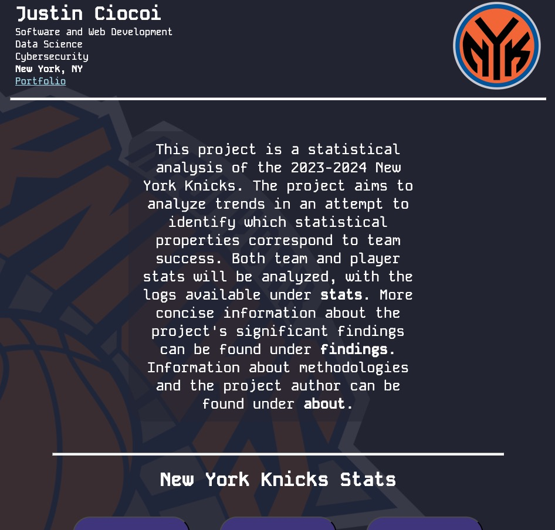
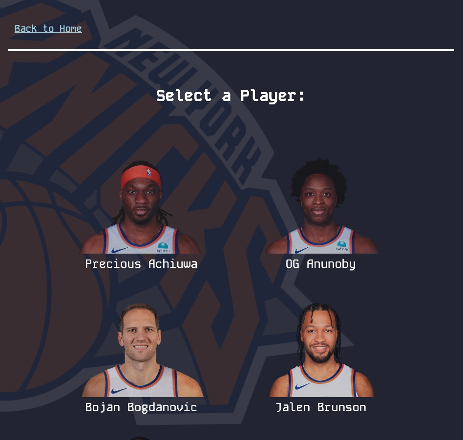
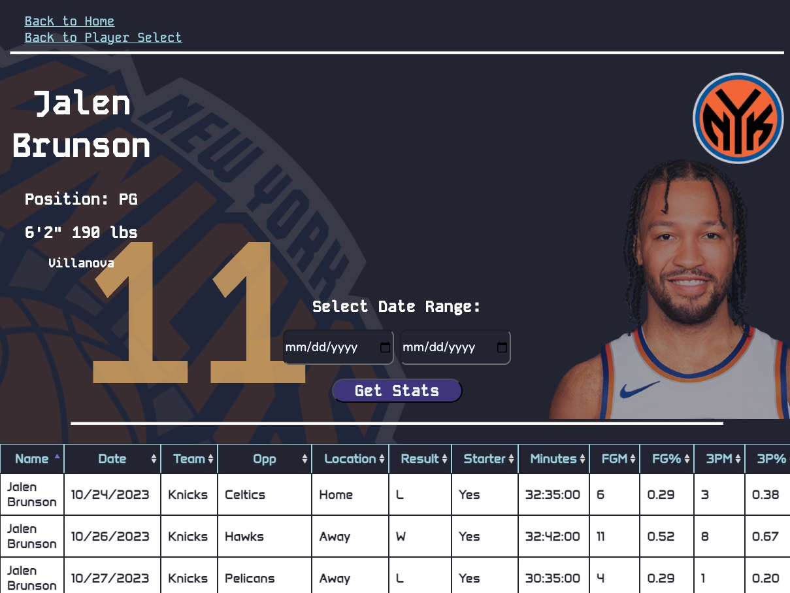
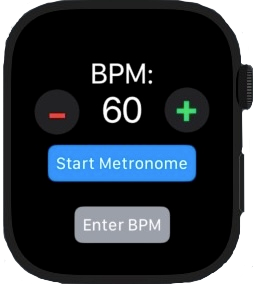
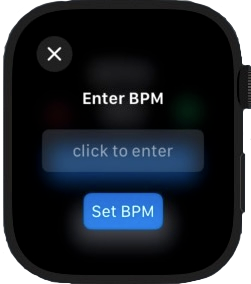
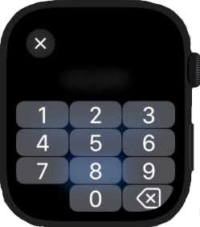

This project uses an automated BASH/ZSH script to store passwords in a vault directory on a home server with a pre-existing SSH connection to said home server
The rationale for building this tool comes from a variety of sources
The growth in value of digital assets possessed by most people and protected using passwords
The need for more complex passwords and the increased reliance on third party password managers
The potential for third party password manager data loss
This tool exists as a backup to traditional password managers rather than an alternative, as its capabilities are fairly limited
Since this tool simply encrypts whatever information is sent over the SSH connection, any text file containing sensitive information can be encrypted and saved in the vault as a backup
The project files for this project can be found here
This tool has been fully tested on MacOS Sonoma (Intel and Apple based), Debian Linux, and Arch Linux ARM
This tool has also been lightly tested on a Windows machine using WSL, but some behavior was buggy, and will be fixed in the future
Underlying Software/Tools/Protocols
BASH/ZSH Scripting
This tool uses two shell scripts, one for encryption, and one for decryption
These scripts are comptible with either BASH or ZSH
Prints instructions to the command line for user interaction
OpenSSL
This tool uses OpenSSL in case of the user needing a newly generated AES Key
An AES key of default length is generated using the OpenSSL library
I chose to use the ECDSA algorithm for key generation due to its quantum resistant properties
SSH
SSH is the main networking protocol used in this tool
SSH is used as a secure communication link over which your encrypted data will be sent
Web-Video Formatter and Downloader
Project Description
This tool uses a GUI to allow users to download publicly accessible content from YouTube in a variety of formats
Currently, .mp3, .mp4, and .avi file types are supported, but more will be added
Many online tools like this exist, but with data security becoming more and more important, being able to run this tool locally and view the source code is highly valuable
While these tools are already easily accessible using terminal commands, this GUI was made both for ease of use and for less technical users
Users can simply paste a link, specify a format using the drop-down menu, select a destination directory, and download the content
The project files for this project can be found here
This tool has been fully tested on MacOS Sonoma (Both Intel and Apple based Silicon)
Underlying Software/Tools/Protocols
Python
Python is used for the GUI
The tkinter library was used to generate and manage GUI elements
The os library was used for file management purposes
BASH/ZSH
Shell scripting is used to automate the backend interactions between command line tools like yt-dlp
Our python GUI will pass user selected inputs to the shellcode, which will execute the requested instructions
yt-dlp
yt-dlp is a third party command line tool which gives an API that can directly download YouTube videos to your local system
yt-dlp allows for a few different file formats on its own
ffmpeg
yt-dlp offers a fairly limited number of formats, but through ffmpeg, we can convert the file after yt-dlp has downloaded it
This does introduce a significant performance penalty, however this tool is intended for use with videos < 10 minutes, which complete downloading and conversion fairly quickly given a stable internet connection and capable CPU
New York Knicks Data Project
Project Description
This project is a web-based site that hosts a data project surrounding the 2023-2024 New York Knicks
As a big fan of the team, I wanted to do a project that combined a personal interest with a professional one
My initial intentions were to learn web development backends using node.js
However, as I spent more time looking at SQL data, I came to a few hypotheses that I wanted to check
There are some statistical analyses done within the scope of this project
These analyses are described and explained in further detail on the site
Findings are also detailed on the site, however these largely amount to observations of correlation
This project was done over the course of a few weeks after the end of the NBA season
This site has been fully tested on Chromium browsers and lightly tested on webkit browsers
This is being hosted using Render's free instance type, so initially loading the site may take up to a minute if it has not been accessed within the last hour
Underlying Software/Tools/Protocols
HTML/CSS/JavaScript
This site was built using HTML, CSS, and JavaScript
Certain third party libraries were used, especially on the backend
The vast majority of the website design was done from scratch
JavaScript was used largely in order to interact with the mySQL database on the backend
Node.js
Node.js was the backend that was used on this project
Node modules express and mysql2 were used for web-server capabilities and mySQL database access
mySQL
The database used is a mySQL database
Originally a local database, I moved this database to an online hosting service such that is now accessible over the web
SQL statements are used not only in data collection on the site backend, but were also used to define and create the schema structure
mySQL workbench was also used for imports of larger data quantities
Web Hosting Details
The project files are hosted at the project's github page
Render is providing web hosting capabilities for the site itself
the mySQL database is hosted here, using an AWS RDS instance



Apple Watch Haptic Metronome
Project Description
This is an Apple Watch application that serves as a metronome using haptic feedback rather than audible clicks
The thinking behind this is to provide a way for musicians to silently keep time in a way that does not interfere with the music itself
The application has a fairly limited set of features, which include
Variable BPM from 30 to 240
Quick-changing the BPM by + or - 5
Manually entering BPM value
Background operation of metronome
This metronome exists as a personal project, so it will not be listed on the App Store, but the git repository here
contains all of the source code necessary to recreate this app on your own device
Underlying Software/Tools/Protocols
Swift
This app was coded entirely in Swift
The SwiftUI library was used for UI/UX design
Swift classes were implemented to allow for background operation
Xcode
Despite my usual IDE being VSCode, this project was developed in Xcode
Through this I familiarized myself with various Xcode tools
Xcode Command Line Utilities
Deploying Apps in Device Simulator and Remote Devices
Xcode Debugging tools
WatchKit
This app uses the WatchKit Framework to effectively execute its intended functions
The WKInterfaceDevice() method is used to access the Watch's haptic engine
Other WatchKit methods were used in the scheduling of the metronome in the background, including
WKExtension()
WKExtensionDelegate()
WKRefreshBackgroundTasks()
WKApplicationRefreshBackgroundTasks()



Simple Dashboard
Project Description
This is a simple web dashboard that I created for myself and personalized to my location
I created it to give me weather data, news I am interested in, as well as some other information
I wanted to create a personalized home page for use on my mobile device browsers, and also wanted to better learn practical API usage
Underlying Software/Tools/Protocols
API Integration
Weather integration
Used OpenWeatherMap Weather API to collect forecast data
Forecast data is provided every 12 hours for the next 3 days
Temperature is given as a number in Farenheit and conditions are returned using an icon set